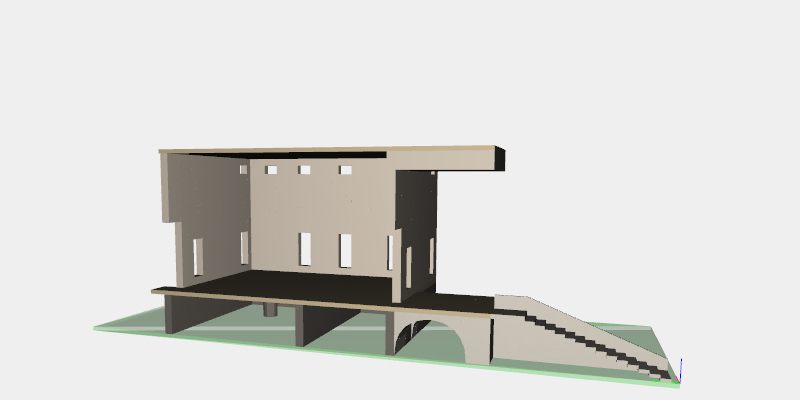
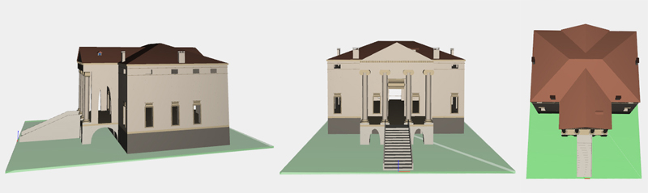
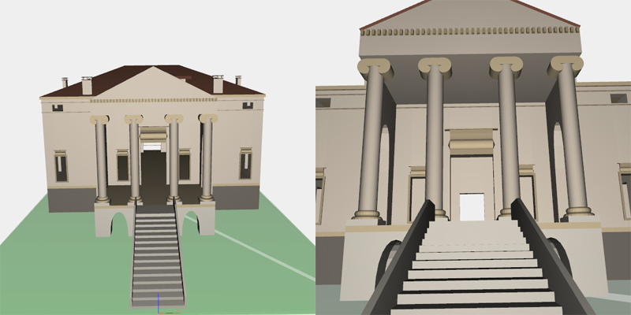

Villa Chiericati, designed by Andrea Palladio
Villa Chiericati (also known as Villa Chiericati-Rigo) is a villa at Vancimuglio in the Veneto, northern Italy. It was designed for Giovanni Chiericati by the architect Andrea Palladio in the early 1550s. Palladio also designed the family's town house Palazzo Chiericati in Vicenza.
In 1996 UNESCO included the villa in the World Heritage Site City of Vicenza and the Palladian Villas of the Veneto.
Architectural details
The villa is square. A portico projects from its principal facade. (This was the first time a temple pronaos had been incorporated into a villa's design). The principal rooms are built upon a piano nobile above a semi-basement. The upper floor is very much of secondary importance. The design of the villa was to be the prototype for Palladio's later works at the Villa Rotonda and the Villa Malcontenta.
Historical notes
Work on the villa stopped after the death of Palladio's client. It was not finally completed until after it had been purchased by Ludovico Porto in 1574. In 1584 he employed the architect Domenico Groppino, who had collaborated with Palladio on other projects, to complete the villa. There is some debate as to the extent Groppino influenced the eventual design of the building. While the portico is undoubtedly by the hand of Palladio himself, the position of the windows is at variance with the architect's own advice in I Quattro Libri dell'Architettura, where he warns against placing windows near the corner of a building lest it weaken the structure (the villa does in fact reveal signs of settlement here).
Plan and cross section
Plans used as reference materials, by Ottavio Bertotti Scamozzi, 1781
The Project
The project, developed for the final exam of the Computational Graphics course, consists in the generation of the 3D Model of the Andrea Palladio's "Villa Chiericati". The project uses the Plasm.js platform framework and runs on Google Chrome web browser.
The project source code is hosted on GitHub here
Working process
At first I have spent some time to examine the plan and the cross section and to gather photographic documentation in order to completely understand the structure of the building.
For generate such a complex building it's necessary to divide it into hierarchical parts, after it's necessary to choose some reference parts and start the modeling work with those. The model was splitted into pieces modeled independently. After a careful planning for a design idea I have chosen to decompose the building in four hierarchical parts
Model decomposition
The Villa, for it's construction, was divided into distinct tiers, representing the hierarchical parts:
- The basement
- The main floor, the external walls and the ceiling
- The roof and some complex parts such archs and covering elements
- The decorative elements
For all the hierarchical tiers were used all the operators and functions used during the course, "squared" elements were modeled with the SIMPLEX_GRID primitive while curved surfaces and solids were made with transfinite Bezier BEZIER and transfinite Hermite CUBIC_HERMITE mapped on appropriate domains. Moreover the affine transformations Translate TRANSLATE(dims)(values)(object), Scale SCALE(axis)(values)(object) and Rotate ROTATE(dims)(angle)(object) were used for the building and the placement of all the decorative elements.
The project source code is hosted on GitHub here
Preparatory work
I have made some preparatory sketches og some elements modeled, with measures and references in order to proceed with a clear schema of the item to construct
For the complexest elements, for example in which more than one bezier curves should be used, I found very useful to prepare a rough sketch of the part to model

Construction
I have used the fact that the Villa is symmetric about the yz-plane, it has given the possibility to construct a section of the model that should be reflected with the affine SCALE transformation in order to obtain the complete model. Moreover this choice allows to visualize a cross section of the constructed item, which gives important visual reference.
The screenshoots inserted below shows the different phases of construction of the model.
The basement
The basement and the main storey, composed by the external walls and the ceiling

The roof and some covering elements were added in the third phase of construction
The final result
Close up of the complete model of Villa Chiericati
The model complete, view from the x, y and z axis

Front view of the complete model

References
Some resources in this site are taken from the web sites listed below and rights belong to their respective owners.
http://en.wikipedia.org/wiki/Villa_Chiericati
http://www.unav.es/ha/006-VILL/pall-vill-peq.htm
"There is something comparable to the power of a great poet [in Palladio’s architecture] who,
out of the worlds of truth and falsehood,
creates a third whose borrowed existence enchants us."
J. W. Goethe